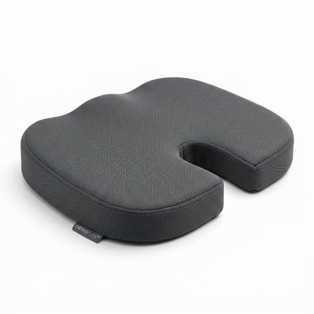

Cojín Ortopédico vs Taburete Activo (Wobble Stool): ¿Qué necesita tu espalda al teletrabajar?

Introducción
Si ya has dado el paso hacia un escritorio elevable, el siguiente reto es decidir dónde te vas a sentar cuando te canses de estar de pie. Aquí surgen dos grandes filosofías en la ergonomía moderna: la sentada pasiva (protegida con cojines) frente a la sentada activa (taburetes oscilantes).
1. Sillas tradicionales con cojín: Sentada pasiva y protegida
La opción más habitual es utilizar una silla de oficina normal (o silla gaming) y potenciarla. Esta filosofía se basa en "descansar" los músculos al sentarse.
Al añadir uno de los mejores cojines para el coxis, lo que haces es eliminar la presión directa que recibe el hueso sacro. La espuma viscoelástica envuelve tus glúteos y te permite mantener una postura prolongada sin tener que hacer esfuerzo para estabilizarte.

Ideal para: Personas con lumbalgia aguda, dolencias de ciática previas, o que teletrabajan jornadas superiores a las 8 horas diarias y necesitan momentos de "desconexión muscular".
2. Taburetes Wobble Stools: Sentada activa y "Core"
Los taburetes activos, que recomendamos frecuentemente en nuestra guía de sillas para standing desks, funcionan con la base ovalada inestable. No tienen respaldo ni reposabrazos.
Ideal para: Personas sin lesiones agudas que quieran fortalecer su abdomen medio, personas nerviosas (que mueven mucho las piernas) y aquellos que usen el asiento en posición de semi-flexión "como apoyo" mientras trabajan medio de pie.

3. ¿Y si combino ambas opciones?
La alternativa premium que escogen muchos programadores y creativos es tener las tres opciones:
- Mesa elevada (de pie puro)
- Mesa a media altura y taburete activo (sentada dinámica)
- Mesa baja, silla ergonómica y cojín (descanso puro)
Si sufres de zonas de presión (en las tuberosidades isquiáticas crónicas), el taburete activo puede resultar muy duro, ya que el disco de asiento suele ser pequeño y fino.
Nuestra recomendación para la mayoría de usuarios es empezar mejorando su silla actual "pasiva" antes de comprar mobiliario activo nuevo:

Feagar Cojín Coxis Espuma Memoria
- Portátil para oficina, coche y gaming
- Funda lavable a máquina
- Espuma con memoria de alta calidad
30,99 €